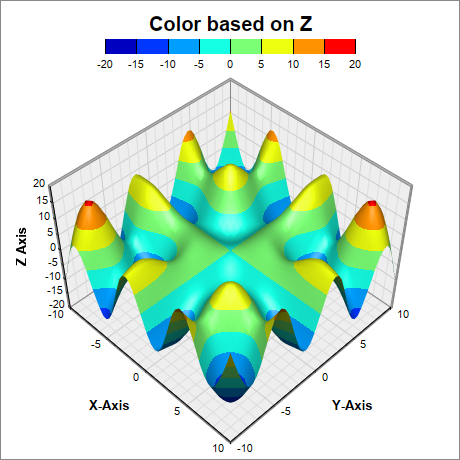
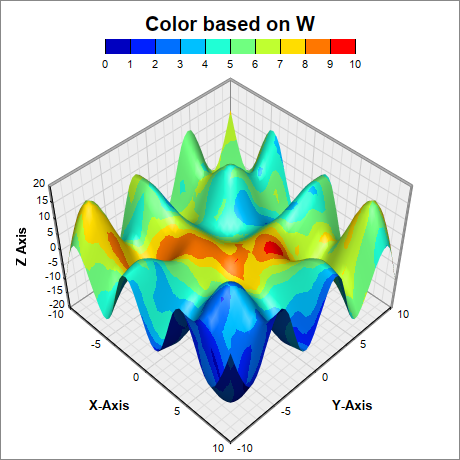
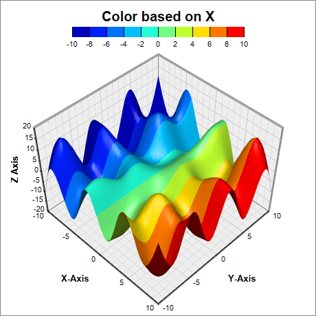
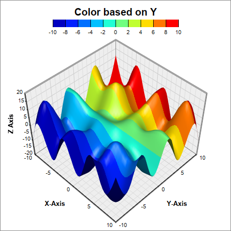

This example demonstrates using 4 dimensional coordinates XYZW. The XYZ are for the positions of the data point and W is for the color.
In previous surface chart examples, the surface color is based on the Z coordinate. ChartDirector also supports using an independent coordinate W for the color. This example demonstrates 4 coloring schemes:
- The default is to color based on the Z coordinate.
- Color based on the W coordinate.
- Color based on the X coordinate. This is by setting the W coordinates to the same value as the X coordinates.
- Color based on Y coordinate. This is by setting the the W coordinates to the same value as the Y coordinates.
The following is the command line version of the code in "cppdemo/surface4d". The MFC version of the code is in "mfcdemo/mfcdemo". The Qt Widgets version of the code is in "qtdemo/qtdemo". The QML/Qt Quick version of the code is in "qmldemo/qmldemo".
#include "chartdir.h"
#include <math.h>
void createChart(int chartIndex, const char *filename)
{
// The x and y coordinates of the grid
double dataX[] = {-10, -9, -8, -7, -6, -5, -4, -3, -2, -1, 0, 1, 2, 3, 4, 5, 6, 7, 8, 9, 10};
const int dataX_size = (int)(sizeof(dataX)/sizeof(*dataX));
double dataY[] = {-10, -9, -8, -7, -6, -5, -4, -3, -2, -1, 0, 1, 2, 3, 4, 5, 6, 7, 8, 9, 10};
const int dataY_size = (int)(sizeof(dataY)/sizeof(*dataY));
// The values at the grid points. In this example, we will compute the values using the formula
// z = x * sin(y) + y * sin(x).
const int dataZ_size = dataX_size * dataY_size;
double dataZ[dataZ_size];
for(int yIndex = 0; yIndex < dataY_size; ++yIndex) {
double y = dataY[yIndex];
for(int xIndex = 0; xIndex < dataX_size; ++xIndex) {
double x = dataX[xIndex];
dataZ[yIndex * dataX_size + xIndex] = x * sin(y) + y * sin(x);
}
}
// Create a SurfaceChart object of size 460 x 460 pixels, with white (ffffff) background and
// grey (888888) border.
SurfaceChart* c = new SurfaceChart(460, 460, 0xffffff, 0x888888);
// Add a color axis at the top center of the chart, with labels at the bottom side
ColorAxis* cAxis = c->setColorAxis(c->getWidth() / 2, 10, Chart::Top, 250, Chart::Bottom);
// If the color is based on the z-values, the color axis will synchronize with the z-axis. (The
// Axis.syncAxis can be used to disable that.) Otherwise, the color axis will auto-scale
// independently. In the latter case, we set the tick spacing to at least 20 pixels.
cAxis->setTickDensity(20);
// Set flat color axis style
cAxis->setAxisBorder(Chart::Transparent, 0);
if (chartIndex == 0) {
// The default is to use the Z values to determine the color.
cAxis->setTitle("Color based on Z", "Arial Bold", 15);
c->setData(DoubleArray(dataX, dataX_size), DoubleArray(dataY, dataY_size), DoubleArray(
dataZ, dataZ_size));
} else if (chartIndex == 1) {
// ChartDirector supports using an extra value (called W value) to determine the color.
cAxis->setTitle("Color based on W", "Arial Bold", 15);
// Use random W values
RanSeries* r = new RanSeries(5);
DoubleArray dataW = r->get2DSeries(dataX_size, dataY_size, 0.5, 9.5);
c->setData(DoubleArray(dataX, dataX_size), DoubleArray(dataY, dataY_size), DoubleArray(
dataZ, dataZ_size), dataW);
delete r;
} else if (chartIndex == 2) {
// We can set the W values to the X coordinates. The color will then be determined by the X
// coordinates.
cAxis->setTitle("Color based on X", "Arial Bold", 15);
const int colorX_size = dataZ_size;
double colorX[colorX_size];
for(int yIndex = 0; yIndex < dataY_size; ++yIndex) {
for(int xIndex = 0; xIndex < dataX_size; ++xIndex) {
colorX[yIndex * dataX_size + xIndex] = dataX[xIndex];
}
}
c->setData(DoubleArray(dataX, dataX_size), DoubleArray(dataY, dataY_size), DoubleArray(
dataZ, dataZ_size), DoubleArray(colorX, colorX_size));
} else {
// We can set the W values to the Y coordinates. The color will then be determined by the Y
// coordinates.
cAxis->setTitle("Color based on Y", "Arial Bold", 15);
const int colorY_size = dataZ_size;
double colorY[colorY_size];
for(int yIndex = 0; yIndex < dataY_size; ++yIndex) {
for(int xIndex = 0; xIndex < dataX_size; ++xIndex) {
colorY[yIndex * dataX_size + xIndex] = dataY[yIndex];
}
}
c->setData(DoubleArray(dataX, dataX_size), DoubleArray(dataY, dataY_size), DoubleArray(
dataZ, dataZ_size), DoubleArray(colorY, colorY_size));
}
// Set the center of the plot region at (230, 250), and set width x depth x height to 240 x 240
// x 170 pixels
c->setPlotRegion(230, 250, 240, 240, 170);
// Set the plot region wall thichness to 3 pixels
c->setWallThickness(3);
// Set the elevation and rotation angles to 45 degrees
c->setViewAngle(45, 45);
// Set the perspective level to 20
c->setPerspective(20);
// Spline interpolate data to a 50 x 50 grid for a smooth surface
c->setInterpolation(50, 50);
// Add the axis titles
c->xAxis()->setTitle("X-Axis", "Arial Bold", 10);
c->yAxis()->setTitle("Y-Axis", "Arial Bold", 10);
c->zAxis()->setTitle("Z Axis", "Arial Bold", 10);
// Output the chart
c->makeChart(filename);
//free up resources
delete c;
}
int main(int argc, char *argv[])
{
createChart(0, "surface4d0.png");
createChart(1, "surface4d1.png");
createChart(2, "surface4d2.png");
createChart(3, "surface4d3.png");
return 0;
}
© 2023 Advanced Software Engineering Limited. All rights reserved.